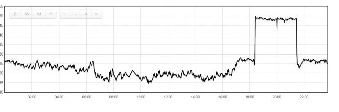

Hello All,
I would like to congrats all who contributed for this amazing software!
I would like to either query the database or use the api to get the data and process it, i am using unix time in milliseconds
i am doing this call http://emoncms.org/feed/data.json?id=52380&start=1417384800000&end=1419026400000&dp=2&apikey=xxxxxxxxxxxx
i am getting this data
[[1417384800000,19.544352001614],[1417417200000,35.260432137383], if i convert 1417384800 i get
2014-12-01 00:00:00 but what i need is to get the time instead of 00:00:00.
The idea is to get the exact time of the day when the feed go above or below a threshold.
Appreciate your help!
Thanks
Re: Beeing able to get the date but not the time from the feed
I get Sun, 30 Nov 2014 22:00:00 GMT for 1417384800 - according to both http://www.onlineconversion.com/unix_time.htm and http://www.epochconverter.com/ so not sure that I understand what your question is.
Re: Beeing able to get the date but not the time from the feed
Thanks Robert for your prompt reply!
the below graph is for the day of 29 December 2014, you can see the peak on 50 is around 18:20 and it goes before 22:00.
i would like to capture the data of the graph not only in hour but also in minutes

When i do 'http://emoncms.org/feed/data.json?id=52380&start=1419822000000&end=1419994800000&dp=50&apikey=9XXXXX8 i get the below data
2014-12-29 06:00:00 [1419825600000L, 21.906944592794]
2014-12-29 07:00:00 [1419829200000L, 18.085277557373]
2014-12-29 08:00:00 [1419832800000L, 18.63694413503]
2014-12-29 09:00:00 [1419836400000L, 18.885815048218]
2014-12-29 10:00:00 [1419840000000L, 16.887808640798]
2014-12-29 11:00:00 [1419843600000L, 19.238611221313]
2014-12-29 12:00:00 [1419847200000L, 18.899722417196]
2014-12-29 13:00:00 [1419850800000L, 19.721666018168]
2014-12-29 14:00:00 [1419854400000L, 17.642499923706]
2014-12-29 15:00:00 [1419858000000L, 18.288888613383]
2014-12-29 16:00:00 [1419861600000L, 20.154444376628]
2014-12-29 17:00:00 [1419865200000L, 26.680000305176]
2014-12-29 18:00:00 [1419868800000L, 39.624166170756]
2014-12-29 19:00:00 [1419872400000L, 48.279722213745]
2014-12-29 20:00:00 [1419876000000L, 48.143611272176]
2014-12-29 21:00:00 [1419879600000L, 36.462778409322]
2014-12-29 22:00:00 [1419883200000L, 26.530000050863]
2014-12-29 23:00:00 [1419886800000L, 26.054166475932]
which has rounded in hours unless i am missing something.
Let me know if it is clearer
thanks
Joe
[Duplicate posts deleted - RW]
Re: Beeing able to get the date but not the time from the feed
Hi Joe, Your request appears to be for 50 datapoints across the 48hr period between Mon, 29 Dec 2014 03:00:00 GMT and Wed, 31 Dec 2014 03:00:00 GMT, have you tried increasing the "dp" value ?
Paul
Re: Beeing able to get the date but not the time from the feed
Thank you Paul!
Increasing the DP to 150 gave me accurate minutes numbers
thanks again
joe
Re: Beeing able to get the date but not the time from the feed
No problem! Although I would be cautious using the term "accurate", Increasing the DP 3x will give you 3x as many datapoints over the same timespan, assuming a regular update interval you would get 3 results per hour rather than 1. Without doing some digging I'm not sure if the results you are seeing are the average for a ~20min period or the value as it was at each ~20min interval. neither of which is entirely "accurate".
Paul